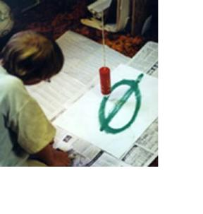
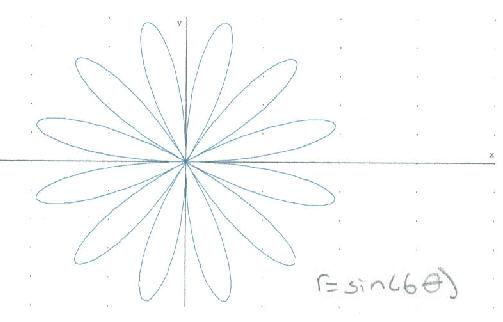
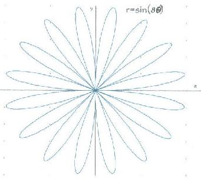
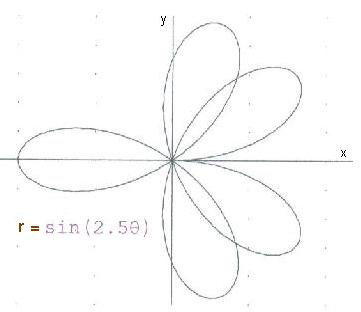
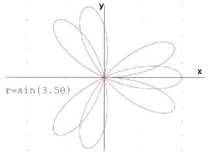

"Trig for Young People" --Part 2
The work below is from a later chapter (not too much later!)
Don set up the complex sand pendulum in the math room. The strings at the top are adjustable so one can change the total height of the pendulum (pendulum #1). The strings come together to form a smaller pendulum (pendulum #2) and are held together by an alligator clip so this height can be changed. The sand is in a ketchup bottle. When the ketchup bottle is pulled off center, the pendulums will swing, perpendicularly, forming "Lissajous" figures like the one shown in Sheri's drawing. The pattern in the sand is determined by the ratio of the frequencies of the 2 pendulums (in this case 3:2).
Ian, as a 4th grader, graphs sine waves at right angles to get a bowtie and a pretzel!
Jonathan, a 9th grader, below views sine waves and Lissajous figures on the oscilloscope with the help of an oscillator (on the left).
Jonathan combines cos x and sin x at right angles. The resultant Lissajous figure is in the upper left hand corner of each figure. (N.B. I scanned Jonathan's graphs, you would think I would get better at making these diagrams the same size in the paint program! ;-))
Jonathan combines sin x and sin 2x at right angles.
Jonathan combines sin x and sin 3x at right angles.
Joey, a 3rd grader (not in the picture), had made an ellipse using the simple sand pendulum. When Don mentioned that the ellipse is the path of the earth around the sun, Joey asked, "Then why don't we have 2 winters!?" Joey was thinking, and a good idea, that the sun was at the center of the ellipse, when in fact the sun is at one of the 2 foci of the ellipse (not at the center).
Lizzy, a 9th grader, started polar graphing on a calculator, without really knowing what she was doing. Don had her graph r=sin (t) on circular graph paper. When he was convinced she could do it herself, he let her use Derive5 to do these graphs. Don scanned these, and adjusted the size of each.



